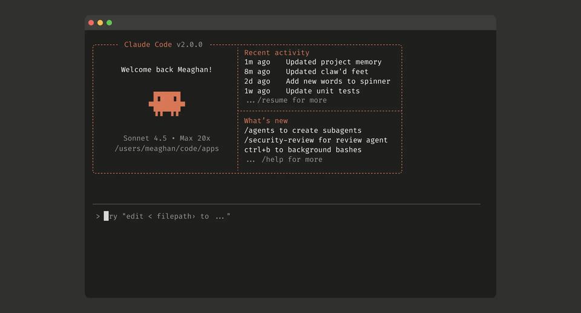

The age of passively querying a chatbot is ending. In its place, a new paradigm is emerging — one where large language models do not merely answer questions but autonomously plan, reason, and execute multi-step tasks on behalf of humans. Welcome to the era of AI agents.
What Are AI Agents?
In the simplest terms, an AI agent is a software system built on top of a large language model that can perceive its environment, make decisions, and take actions to accomplish a goal — all with minimal human intervention. Unlike a traditional chatbot that responds to a single prompt and waits for the next one, an agent can break a complex objective into subtasks, call external tools such as databases, APIs, and web browsers, evaluate intermediate results, and adjust its strategy on the fly.
Consider the difference between asking a language model "What were Apple's quarterly revenues last year?" and instructing an agent "Analyze Apple's last four earnings calls, compare gross-margin trends against its semiconductor suppliers, and draft a two-page investment memo with sourced data." The first is a lookup. The second is a workflow — and that distinction is what makes agents transformative.
The architectural backbone of most modern agents follows the "ReAct" pattern: Reason, then Act, observe, and iterate until the task is complete.
The architectural backbone of most modern agents follows what researchers call the "ReAct" pattern: Reason, then Act. The model thinks through what it needs to do, executes a tool call (reading a file, querying a database, browsing the web), observes the result, and then reasons again about the next step. This loop continues until the task is complete. Frameworks such as LangChain, CrewAI, and Anthropic's own Model Context Protocol (MCP) have standardized this loop, making it accessible to developers worldwide.
Claude: The Most-Used LLM for AI Agents
Among the growing constellation of foundation models — GPT-4o, Gemini, Llama, Mistral, and others — one model has emerged as the clear favorite for agentic applications: Anthropic's Claude. According to multiple industry benchmarks and developer surveys published in early 2026, Claude consistently ranks as the most-used LLM powering autonomous agent workflows across enterprise and open-source ecosystems alike.

Why Claude? Three factors stand out. First, Claude's instruction-following fidelity is exceptionally high. When an agent's reasoning chain depends on the model executing a precise sequence of tool calls without "hallucinating" extra steps or skipping critical ones, reliability is paramount. Anthropic's Constitutional AI training methodology appears to give Claude an edge in this regard, producing outputs that are both accurate and well-calibrated in their uncertainty. Second, Claude offers an industry-leading context window — currently up to one million tokens in its production API — which allows agents to ingest and reason over massive documents, entire codebases, or lengthy financial filings in a single pass without the information loss that plagues retrieval-augmented workarounds. Third, Claude's native support for structured tool use, computer interaction, and the open Model Context Protocol means that developers can plug it into virtually any enterprise system — from a Bloomberg terminal to an internal ERP — with minimal glue code.
The numbers tell the story. Anthropic reported that as of Q1 2026, over 60 percent of API traffic to Claude involves multi-turn, tool-augmented sessions — the hallmark of agentic usage. Independent surveys from Reworkd, LangChain, and Stack Overflow's 2026 Developer Survey corroborate this trend, placing Claude at the top of the "preferred model for agent development" category for the second consecutive year.
AI Agents in Finance: From Back-Office Automation to Autonomous Analysis
Perhaps no industry stands to benefit from agentic AI more than finance. The sector is, by nature, data-dense, regulation-heavy, and time-sensitive — precisely the environment where autonomous reasoning shines.
Portfolio Research and Due Diligence. Investment analysts spend a significant portion of their workday reading earnings transcripts, regulatory filings, and macroeconomic reports. An AI agent equipped with a financial data API can ingest a company's entire 10-K filing, cross-reference it against sector benchmarks from Bloomberg or Refinitiv, flag anomalies in cash-flow statements, and produce a draft research note — all within minutes. Firms such as Bridgewater Associates and Citadel have publicly acknowledged experimenting with Claude-based agents for exactly this kind of accelerated due diligence.
Risk Management and Compliance. Regulatory compliance is one of the most labor-intensive functions in banking. Anti-money-laundering teams routinely review thousands of transaction alerts per week, the vast majority of which are false positives. Agentic systems can triage these alerts by autonomously pulling customer records, cross-checking sanctions lists, reviewing transaction histories, and drafting Suspicious Activity Reports that human compliance officers then verify. Early deployments at European banks have reportedly reduced false-positive review time by over 40 percent.
Algorithmic Trading Strategy Development. While fully autonomous AI-driven trading remains in its infancy due to regulatory constraints, agents are already being used upstream in the strategy-development pipeline. A quantitative researcher can instruct an agent to backtest a momentum strategy across ten years of equity data, optimize parameters using walk-forward analysis, generate performance tearsheets, and summarize the results with an interpretation of the Sharpe ratio and maximum drawdown. What once took a junior quant a full week can now be prototyped in an afternoon.
Personal Finance and Wealth Management. On the retail side, AI agents are being embedded into neobank and robo-advisor platforms to offer genuinely personalized financial guidance. Rather than presenting a static risk-tolerance questionnaire, an agent can engage a user in a natural-language conversation, analyze their spending patterns from linked bank accounts, simulate retirement scenarios under varying assumptions, and recommend a diversified portfolio — all while explaining the reasoning behind each allocation in plain language.
Risks and the Road Ahead
The promise is enormous, but so are the risks. Autonomous agents operating in high-stakes financial environments introduce questions of accountability, explainability, and systemic risk that regulators are only beginning to address. The European Union's AI Act, which entered enforcement in early 2025, classifies certain financial AI applications as "high-risk," requiring detailed documentation of training data, bias audits, and human-oversight mechanisms. In the United States, the SEC has signaled increased scrutiny of AI-generated investment advice.
There is also the technical challenge of "compound errors." In a multi-step agent workflow, a small mistake in an early reasoning step can cascade into a fundamentally flawed output. This is why the reliability of the underlying LLM matters so much — and why the industry has gravitated toward Claude, whose error rates in structured tool-use benchmarks remain the lowest among frontier models.
Conclusion
AI agents represent a genuine paradigm shift, not merely an incremental improvement over chatbots. They transform large language models from passive oracles into active collaborators capable of executing complex, real-world workflows. Finance, with its insatiable appetite for data processing, risk analysis, and regulatory compliance, is among the first sectors to feel the impact — but it will not be the last. As the underlying models grow more reliable and the tooling ecosystem matures, the question for economics students and professionals alike is no longer whether AI agents will reshape their field, but how quickly they must adapt.
Selected references
- Anthropic. (2026). Claude model card and system prompts. Anthropic.
- European Union. (2025). Regulation (EU) 2024/1689 — The AI Act. Official Journal of the European Union.
- LangChain. (2026). State of AI agents report. LangChain Blog.
- Stack Overflow. (2026). 2026 Developer Survey — AI & ML section. Stack Overflow.
- Yao, S., Zhao, J., et al. (2023). ReAct: Synergizing reasoning and acting in language models. ICLR 2023.